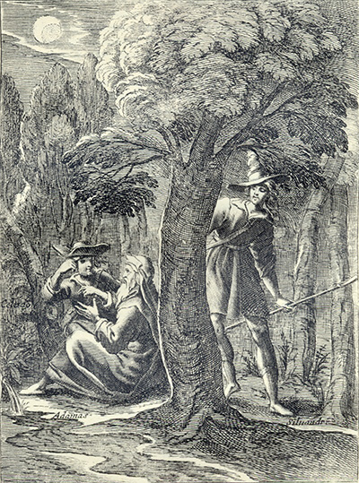
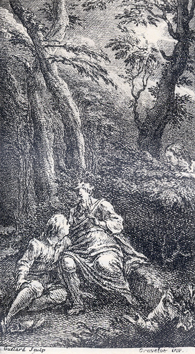
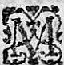

L'Astrée
d'Honoré d'Urfé
Deuxième partie
Livre 2

Adamas s'entretient avec Céladon. Silvandre écoute (II, 2, 116)
L'AstréeII, 2. Édition Vaganay**, 1925Adamas s'entretient avec Céladon. Silvandre écoute (II, 2, 116)
(Voir Illustrations)

Gravue signée Guélard et Gravelot
Adamas s'entretient avec Céladon. Silvandre écoute (II, 2, 116)
L'AstréeII, 2. Édition Vaganay**, 1925Gravue signée Guélard et Gravelot
Adamas s'entretient avec Céladon. Silvandre écoute (II, 2, 116)
(Voir Illustrations)
Édition de 1610, p. 63.
Édition de Vaganay, p. 45.
HARANGUE.
DU BERGER CALIDON.
RÉPONSE
DE LA BERGÈRE CÉLIDÉE.
RÉPONSE.
DU BERGER THAMIRE.
pour ne lui donner point d'amour ? Quoi donc ? Il n'y aura que les yeux qui jouissent d'une chose si rare ? Et pourquoi ne permettent les Dieux que si nos cœurs en reçoivent les plus grands coups, nos cœurs aussi en ressentent le plus grand contentement ? L'ont-ils faite si belle pour n'être point aimée ? ou si nous l'aimons, l'ordonnent-ils seulement pour nous consumer ? Ah ! je vois bien qu'ils me répondent que si cette beauté a été produite pour être aimée, c'est pour sa propre gloire et pour le dommage de ceux qui l'aimeront comme moi. Cette pensée l'arrêta si court, qu'en cessant de marcher, après l'avoir longtemps roulée dans son esprit, il proféra telles paroles :
SONNET.
QU'IL N'Y A CONSIDÉRATION
QUI L'EMPÊCHE D'AIMER
sa
maîtresse.

Mon penser
η, hé ! pourquoi me viens-tu figurer
Qu'il ne faut que je l'aime, et qu'elle est pour un autre ?
Si c'est pour un mortel, ne peut-elle être nôtre,
Et si c'est pour un Dieu, ne la puis-je adorer ?
Si c'est pour un Mortel, qui saurait mesurer,
Entre tous les mortels, son amour à ma flamme ?
Et si c'est pour un Dieu, se peut-il voir une âme
Qui d'un zèle plus saint la puisse révérer ?
Mais que nous vaut cela, si cette âme cruelle
Ne daigne regarder ceux qui meurent pour elle ?
L'Amour ou la Raison la forceront un jour.
Enfin elle aimera, puisque nul
η ne l'évite :
Que si c'est par Raison, gagnons-la par mérite,
Et si c'est par Amour, gagnons-la par Amour.
qu'à l'entretenir en cette
imagination. Si, comme j'ai dit
η, il bronchait contre
quelque chose : - Je trouve bien encore, disait-il,
plus de contrariétés à mes désirs. S'il oyait
trembler les feuilles des arbres, émues par quelque
souffle de vent : - Ô que je tremble bien mieux de
crainte, disait-il, quand je suis près d'elle, et que
je lui veux dire les véritables passions qu'elle
pense être feintes ! Que s'il levait quelquefois
les yeux en haut, considérant la Lune, il s'écriait :
La Lune au Ciel, et ma Diane en terre.

Livre 1

Livre 3
Référence électronique :
document.write('"'+document.title.substr(0, document.title.indexOf("-")-1)+'". '+"Dernière mise à jour : "+ExtractDate(document.lastModified)+".")Deux visages de L'Astrée.
©2005-2020 E. Henein.
URL :
var today = new Date();
document.write(document.URL +
"<br>Consulté le : " + today.toLocaleDateString("fr-FR") + ".");
var _gaq = _gaq || [];
_gaq.push(['_setAccount', 'UA-19288475-1']);
_gaq.push(['_trackPageview']);
(function() {
var ga = document.createElement('script'); ga.type = 'text/javascript'; ga.async = true;
ga.src = ('https:' == document.location.protocol ? 'https://ssl' : 'http://www') + '.google-analytics.com/ga.js';
var s = document.getElementsByTagName('script')[0]; s.parentNode.insertBefore(ga, s);
})();
Deux visages de L'Astrée.
©2005-2019 Eglal Henein. Creative Commons 4 
Édition critique de la première partie de L'Astrée (1607, 1621)
mise en ligne le 9 avril 2007
Édition critique de la deuxième partie de L'Astrée (1610, 1621)
mise en ligne le 10 octobre 2010
Édition critique de la troisième partie de L'Astrée (1619, 1621)
mise en ligne le 1er novembre 2014
Édition critique de la quatrième partie de L'Astrée (1624)
mise en ligne le 15 janvier 2019
document.write("Dernière mise à jour : "+ExtractDate(document.lastModified))